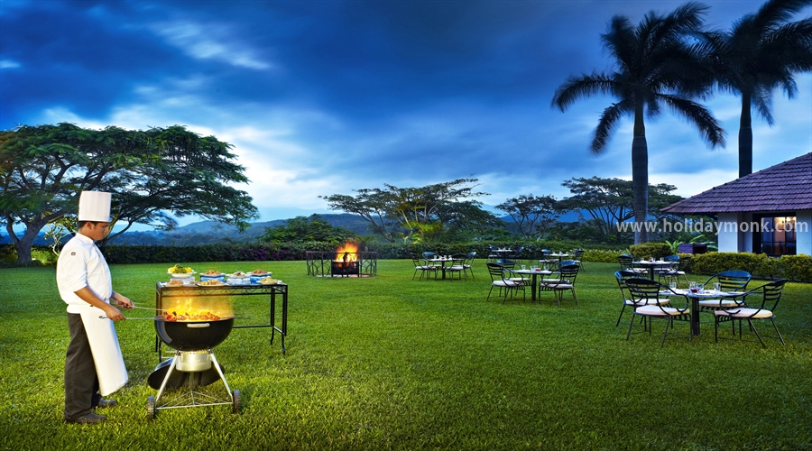

Chikmagalur is a town located in the Chikkamagaluru district in the Indian state of Karnataka. Located in the foothills of the Mullayanagiri range, the town with its favorable climate and coffee estates attracts tourists from around the state. National Highway 173 (India) passes through the town connecting it with the state capital Bangalore, located 250 kilometres (160 mi) awayChikkamagaluru takes its name from the Kannada Cikkamagaḷa ūru that translates to "younger daughter's town". It is said to have been given as a dowry to the youngest daughter of Rukmangada, the legendary chief of Sakharayapattana..
Chikmagalur is situated in the Mallenadu region of Karnataka in the Deccan plateau in the foothills of the Western Ghats. It is situated at an elevation of 1,090 metres (3,580 ft) above mean sea level. The Yagachi River has its source near the town and flows in the south-easterly direction before uniting with the Kaveri river. Chikmagalur generally has a moderate to cool climate. The temperature of the city varies from 11-20 °C during winter to 25-32 °C during summer.